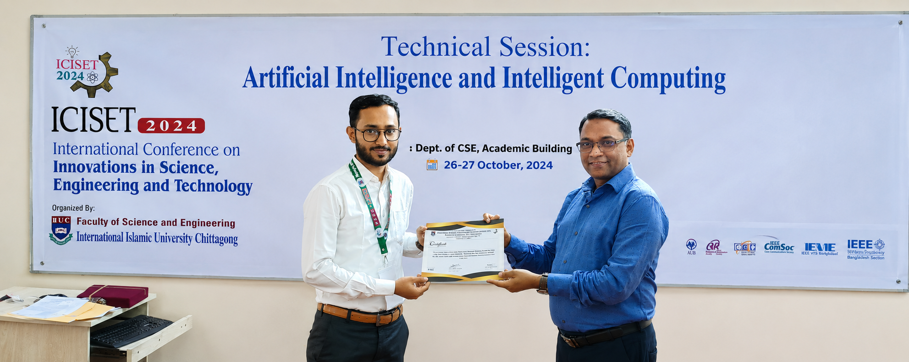
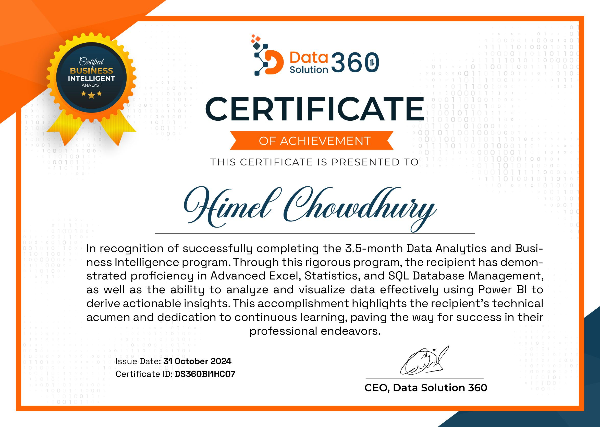
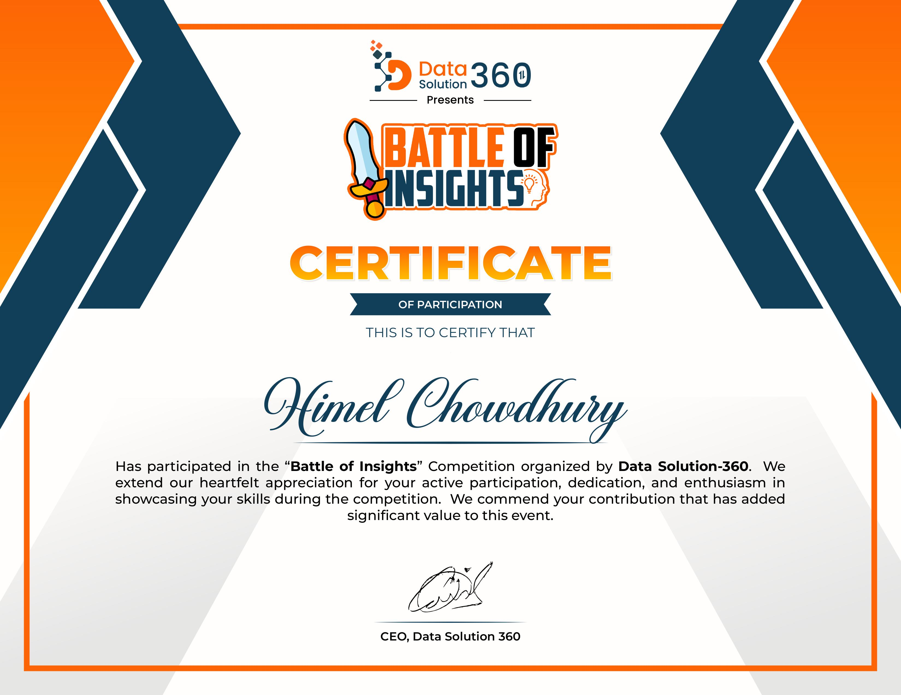
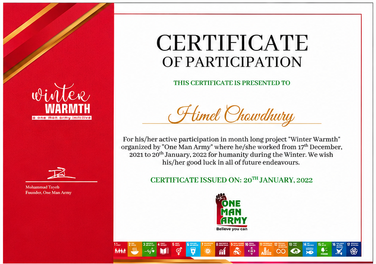
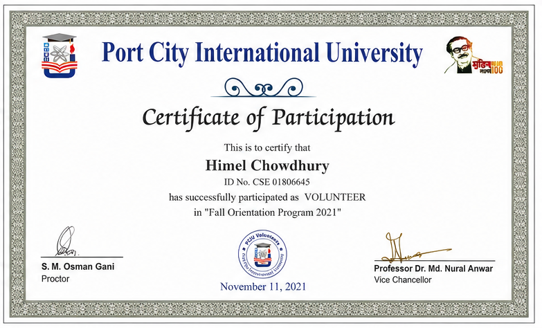
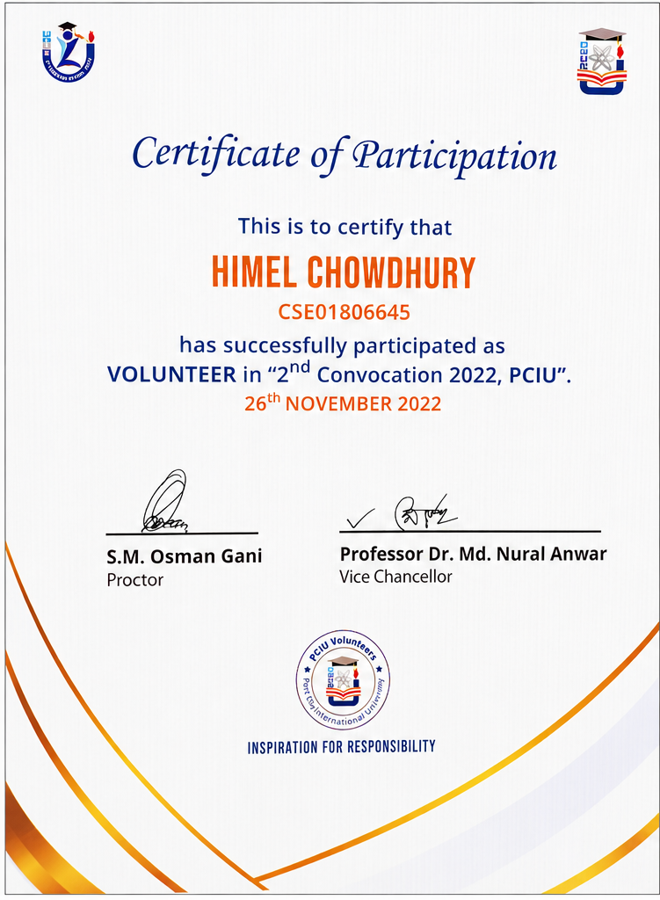

About me
Information About me
I'm Himel Chowdhury, a Computer Science & Engineering graduate from
Port City International University, Chattogram.
Throughout my academic journey, I developed strong programming skills across multiple languages.
One of the highlights of my journey was publishing an
IEEE Xplore research paper, where I applied
Machine Learning and Deep Learning techniques using
Python to solve an industrial computer vision problem.
Working on my research taught me how challenging—and rewarding—it is to solve real-world problems through
data, algorithms, and intelligent systems. This experience strengthened my passion for
Artificial Intelligence, Machine Learning, and
Deep Learning, and inspired me to pursue advanced research in these fields.
Currently, I work as a Jr. Executive in the
Industrial Engineering Department at
KDS IDR Ltd., where I have been contributing for the past
1.5 years. My role has provided valuable experience in data analysis,
process optimization, and applying data-driven decision-making in industrial operations.
Beyond my professional work, I continuously expand my knowledge by exploring new technologies,
building AI and data analytics projects, and conducting research in
Machine Learning, Deep Learning, Computer Vision, Data Analytics, and Business Intelligence.
I am passionate about leveraging technology to solve real-world challenges and create meaningful impact.
Technical Skills
AI & Data Science Skills
Experience
Feb 2025 - present
Jr. Executive - KDS Group Ltd.
• Prepared daily RP production reports and generated MIS reports for management insights.
• Created monthly incentive, daily achievement, forecast, and absenteeism reports.
• Conducted daily production forecast meetings to improve planning and cross-functional coordination.
Nov 2023 – Nov 2024
Jr. Officer - Western Education Group
• Processed and analyzed data using Microsoft Excel to prepare MIS and analytical reports.
• Prepared MIS reports, official documents, and professional correspondence.
• Maintained data accuracy and supported reporting, documentation, and administrative operations.
Education
2018 – 2023
B.Sc. in Computer Science & Engineering
Port City International University
Chattogram, Bangladesh
2016 – 2018
Higher Secondary Certificate (HSC)
– Hajera Taju University College
Group: Science
2014 – 2016
Secondary School Certificate (SSC)
– Haji Mohammad Mohsin Govt. High School
Group: Science
My Projects
Here are some of my featured projects developed using Power BI, Microsoft Excel, PHP and SQL.


Research Publications
This section presents my IEEE-published research paper on automated broken stitch detection using Python, Machine Learning, Deep Learning, and Computer Vision techniques for industrial quality inspection.
My Achievement

ICISET 2024 International Conference
Participated in the International Conference on Innovations in Science, Engineering and Technology (ICISET 2024) at IIUC. Attended the technical session on Artificial Intelligence and Intelligent Computing, enhancing my knowledge of AI, intelligent computing, and emerging research trends.

Data Analytics & Business Intelligence
Successfully completed a professional training program on Data Analytics and Business Intelligence organized by Data Solution 360. Acquired practical skills in data preprocessing, SQL, Excel, Power BI, dashboard development, and data visualization for business decision-making.

Battle of Insights Competition
Participated in the Battle of Insights competition organized by Data Solution 360. Demonstrated analytical thinking, data visualization, and problem-solving skills by working on real-world business case studies and presenting data-driven insights.

Winter Warmth Project
Actively participated in the Winter Warmth community service project organized by One Man Army, contributing to winter clothing distribution for underprivileged people. This experience strengthened my teamwork, leadership, and social responsibility.

Fall Orientation Program 2021
Served as a volunteer at the Fall Orientation Program 2021 organized by Port City International University. Assisted in event coordination, guided new students, and ensured the successful execution of the university's orientation program.

2nd Convocation 2022
Successfully participated as a volunteer in the 2nd Convocation 2022 at Port City International University. Supported event management, guest assistance, and organizational activities, demonstrating strong communication and teamwork skills.
Contact
Contact Me
Thank you for visiting my portfolio. I'm always open to new opportunities, research collaborations, and innovative projects. Whether you have a question, a project idea, or a career opportunity, I'd be delighted to connect. Feel free to reach out—I look forward to hearing from you.
: Chattogram,Bangladesh
: himuchy332@gmail.com
: 01533129119